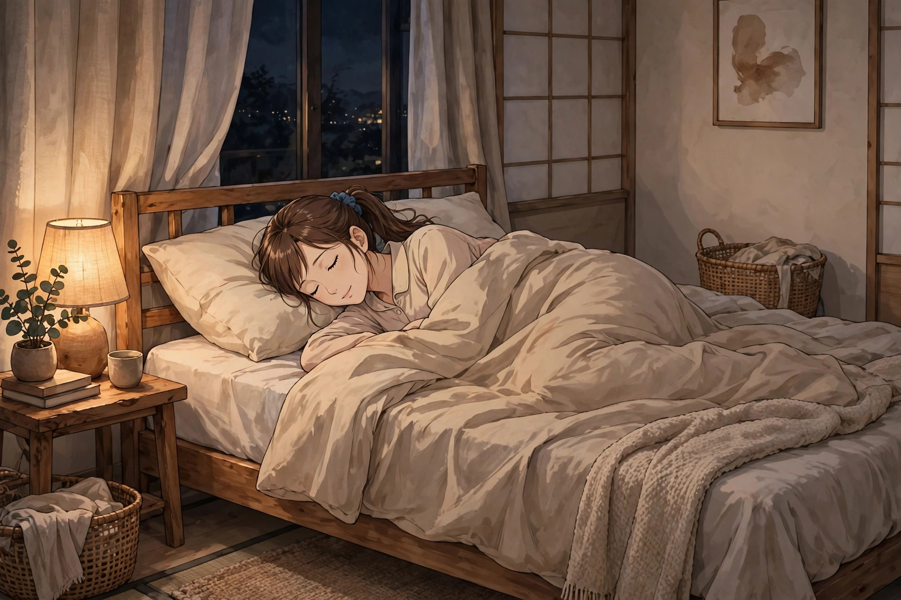

寝ている間の姿勢と、枕・マットレスの選び方の考え方を解説します
睡眠は、1日のうちで最も長く同じ姿勢を取る時間です。寝姿勢と寝具の合う・合わないは、朝の首や腰の感覚にそのまま現れます。
「朝起きると首が重い」「腰が固まった感じがする」。こうした朝の不調には、眠る前の体の状態と、寝ている間の姿勢・寝具の両方が関係します。このページでは、寝姿勢の種類、枕とマットレスの考え方、眠る前にできる整え方を解説します。
人は一晩に何度も寝返りを打ちます。寝返りは、同じ部位への圧迫を逃がし、血の巡りを保つための自然な動きです。つまり、眠っている間の姿勢は一つの形に固定されるものではなく、「入眠時の姿勢」と「寝返りのしやすさ」の組み合わせで考える必要があります。
寝具を選ぶときに大切なのは、一つの姿勢の美しさではなく、体への圧が分散され、寝返りが妨げられないことです。朝の体の感覚は、その夜の寝姿勢と寝具が体に合っていたかを知る手がかりになります。
体重が広い面で分散され、背骨のカーブを保ちやすい姿勢です。枕は首のカーブを支える高さが目安になります。腰に負担を感じる方は、膝の下にクッションを入れると楽になることがあります。
日本人に多い寝姿勢です。肩の幅の分だけ枕の高さが必要で、低すぎると首が下へ曲がり、高すぎると上へ曲がります。下になる肩や骨盤に圧が集中しやすいため、抱き枕で上の脚を支えると、骨盤のねじれを減らせます。
首を大きくひねった姿勢が続くため、首や腰への負担が大きくなりやすい姿勢です。うつ伏せでないと眠れない方は、胸の下に薄いクッションを入れてひねりの角度を浅くする工夫があります。
横向き寝では、頭・首・背骨が横から見てまっすぐに並ぶことが目安です（図1）。枕がこのラインを作れる高さかどうかが、朝の首の感覚を左右します。抱き枕やクッションを脚の間にはさむと、骨盤の傾きが安定し、腰まわりの緊張も減ります。

図1：ベッドで横向きに眠る姿勢。枕の高さが合うと、頭から背骨のラインがまっすぐに保たれます。
寝具売り場で横になって試すときは、仰向けだけでなく、いつもの寝姿勢でも確認することが大切です。短時間の試し寝では分かりにくいため、返品や交換の条件も含めて選ぶと安心です。
横向き寝の方からは「下の肩が痛くなる」という相談も多くあります。これは肩そのものの問題というより、肩に集中した圧と、枕の高さの不一致が重なって起こることが多いものです。抱き枕で体を少し前傾させる、肩の前にクッションを置いて圧を逃がすといった工夫で、朝の肩の感覚は変わってきます。
枕の役割は、頭を支えることではなく、首のカーブの隙間を埋めて、頭から背骨のラインを保つことです。仰向けでは、首の後ろのカーブに沿う高さ。横向きでは、肩の幅を埋めて頭が下がらない高さ。この2つが目安になります。
高さの調整にはタオルが使えます。枕の下や上にタオルを重ねて数ミリ単位で変え、朝の首の感覚がどう変わるかを数日かけて比べる方法です。素材の好みよりも先に、高さの合う・合わないを確認することが、枕選びの順番としておすすめです。
マットレスは、硬すぎても柔らかすぎても負担になります。硬すぎると肩や骨盤など出っ張った部位に圧が集中し、柔らかすぎると腰が沈み込んで背骨のラインが崩れます。仰向けで腰とマットレスの間に手がすっと入る程度の隙間があることが、一つの目安です。
へたりも見逃せない要素です。長年使ったマットレスは、体の重い部分から沈みが進みます。寝具を買い替える前に、硬い床に布団を敷いて数日眠り、朝の感覚が変わるか試す方法もあります。体側の問題か寝具側の問題かを分ける手がかりになります。
体格によっても合う硬さは変わります。体の軽い方は硬いマットレスでは浮いた感じになりやすく、沈み込みが足りないと腰の隙間が埋まりません。家族で同じ寝具を使う場合も、感じ方が違うのは自然なことです。どちらか一方の感覚だけで選ばず、それぞれの朝の感覚を確認しながら調整してください。
寝具の良さは、体の状態によって活かされ方が変わります。日中のデスクワークで固まった首や肩は、眠る前に一度ほどいておくことで、枕やマットレスに体を預けやすくなります。寝具を変えても朝の感覚が変わらないときは、寝具ではなく体側の緊張が残っている場合があります。
朝の首の重さは、枕の高さと首まわりの緊張の両方から起こります。日中にデスクワークで固まった首は、眠っている間も緊張を残しやすく、合わない枕がそれを助長します。朝の腰の重さは、マットレスの沈み込みと、日中の座り姿勢で縮んだ太ももの前の筋肉が関係することがあります。
つまり、朝の不調は「寝具だけ」で決まるものではありません。眠る前の体の状態が、寝ている間の姿勢の質を決めています。寝具の見直しと体のケアは、別々ではなく一続きの対策です。
眠る前の過ごし方は、凝った準備でなくて構いません。湯船、軽いストレッチ、画面を手放す時間。この3つがそろうだけでも、体の緊張の抜け方は変わります。続けられる形であることが、どんな工夫よりも大切です。
どれも特別な道具のいらないことばかりです。眠る前の30分の過ごし方が、その夜の姿勢と朝の感覚を左右します。
寝具が体に合っているかは、寝ている本人には分かりにくいものです。判断の材料になるのは、朝起きたときの体の感覚です。首や腰に重さが残らず、体が軽く起きられる日が続くなら、その寝具は体に合っている可能性が高くなります。逆に、旅行先や実家で眠ったときに朝の感覚が違うなら、自宅の寝具を見直す手がかりになります。
新しい寝具は、数日では判断できないこともあります。体が新しい硬さや高さに慣れるまでには時間がかかるため、1週間ほどは様子を見て、朝の感覚の変化を比べることが大切です。タオルで高さを調整できる枕のように、微調整できる形から始めると、合う条件を見つけやすくなります。
昼寝は、午後の集中を戻す助けになりますが、長さと時間帯が大切です。夕方以降の長い昼寝は、夜の眠気を浅くし、眠る前の体のリズムをずらします。昼寝をするなら、午後の早い時間に短く区切ることが、夜の眠りを妨げない目安です。
休日に長く眠って平日の不足を補う「寝だめ」も、リズムの面では注意が必要です。就寝と起床の時刻が大きくずれると、体のリズムが組み直され、月曜の朝のだるさにつながります。休日も起きる時刻を大きくずらさないことが、眠りの土台を保つ考え方です。
眠りの土台は、寝具・姿勢・リズムの3つでできています。どれか一つを変えても実感が薄いときは、残りの要素に原因が残っていることがあります。当サロンでは、眠りのご相談に対しても、この3つの視点から状態をうかがい、体の緊張に関わる部分をケアで整えています。
当サロンでは、眠りの浅さや朝の不調をうかがうと、首・肩まわりの緊張と姿勢の状態をあわせて確認します。体の緊張がほどけると、眠る前の体はリラックスした状態に近づき、施術の日に「よく眠れた」とおっしゃる方もいます。施術は眠りを直接作るものではありませんが、眠るための体の土台を整える関わり方ができます。
寝具のご相談も、施術の際によくいただきます。体の状態を見ながら、その方に合う枕の高さの目安や、マットレスの確認ポイントをお伝えしています。眠りと姿勢は切り離せないテーマとして、日々のケアの中で大切にしています。
寝返りは、眠りの質を守る大切な動きです。同じ姿勢が続くと、下になった部位の血の巡りが滞り、筋肉も圧迫され続けます。寝返りはこの圧を逃がし、体の位置を少しずつ変えることで、朝まで同じ部位に負担を集中させない働きをしています。
寝返りがしにくい環境では、朝の体のこわばりが出やすくなります。寝具が柔らかすぎて体が沈み込む、寝間着や布団が体に絡む、寝室が暑くて眠りが浅くなる、といった条件は寝返りを妨げます。「よく眠ったはずなのに体が重い」ときは、眠りの長さだけでなく、寝返りのしやすさも振り返ってみてください。
眠りの質は季節でも変わります。夏は暑さで眠りが浅くなり、冷房で体が冷えると首や肩の緊張が残りやすくなります。冬は布団の重さと室温の低さで寝返りが減り、朝のこわばりが出やすくなります。寝具そのものだけでなく、室温と湿度、寝間着の素材まで含めた「眠る環境」として整える視点が役立ちます。
枕やマットレスの感じ方も季節で変わります。夏に合っていた硬さが冬は硬く感じる、といった変化は珍しくありません。季節の変わり目に朝の感覚が変わったら、寝具と環境の両方を見直す合図と捉えてください。
眠っている間に固まった体は、急に動かすより、小さな動きから目覚めさせる方が負担が少なくなります。1分ほどのほぐしでも、朝の動き出しの軽さは変わってきます。
Q. 枕は高い方が良いですか、低い方が良いですか？
A. どちらが正解ということはなく、寝姿勢と体格に合うかで決まります。仰向けでは首のカーブを支える高さ、横向きでは頭から背骨がまっすぐになる高さが目安です。タオルで高さを微調整しながら、数日単位で試す方法がおすすめです。
Q. 横向き寝は体に悪いのですか？
A. 横向き自体が悪いわけではありません。肩や骨盤に圧が集中しやすいため、枕の高さと抱き枕などの工夫で負担を分散することが大切です。眠りやすい姿勢であることも重要な要素です。
Q. 朝起きると腰が重いのは、寝具のせいですか？
A. 寝具が関係していることもありますが、日中の姿勢や体の緊張が残ったまま眠ることも背景になります。マットレスのへたりの確認とあわせて、眠る前の体の状態も見直してみてください。
Q. 寝具を変えれば眠りは深くなりますか？
A. 寝具は眠りの土台の一つですが、眠りの深さは生活リズムや体の緊張など複数の要素で決まります。寝具の見直しと体のケアを組み合わせることで、朝の感覚は変わってきます。
解説と施術は、施術歴30年・鍼灸師の資格を持つ平賀建人が担当します。登録販売者・アロマセラピスト・パーソナルトレーナーの知識も活かし、体の仕組みをできるだけ分かりやすくお伝えすることを心がけています。
この記事は専門解説シリーズの1本です。料金やご予約についてはトップページをご覧ください。